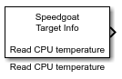

Read CPU temperature
Read CPU temperature
Library
Simulink Real-Time - Speedgoat/Utilities

Description
This block reads the current temperature of the target machine's CPU package.
Supported Target Machines
This block supports all Speedgoat real-time target machines.
Ports
Outputs
-
Temperature
The Read CPU temperature block has one output port which represents
the current CPU temperature in °C as an unsigned 8-bit value.
Parameters
-
Sample time
Defines the base sample time at which this driver block gets its
sample hit. The units are in seconds.